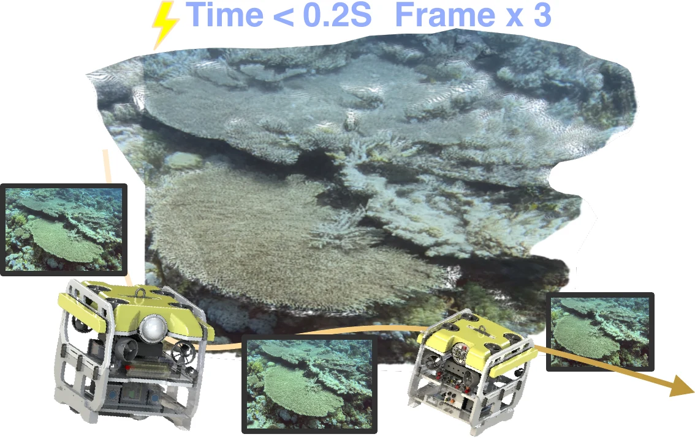
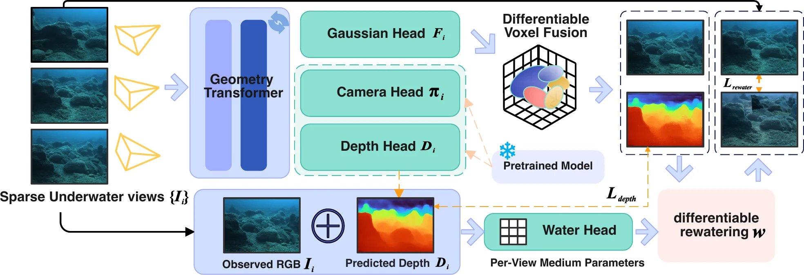

Scene — / —
Loading
Preparing gallery
Preparing 3D galleryLoading scene list
3D
Loading the first lightweight PLY preview.
AAAI 2027 submission · Interactive project page
AAAI 2027
From sparse, unposed underwater images to a medium-free 3D Gaussian scene—in a single forward pass.
Interactive preview
FathomSplat and AnySplat are kept as two separate collections. Choose a model, then slide through its PLY scenes below.
Loading the first lightweight PLY preview.
Verified sources. FathomSplat loads only from asset/Fathomsplat/ply; AnySplat loads only from asset/anysplat/ply, which matches 3d_result/normal/ply. Nothing in 3d_result/page is used.
Overview
FathomSplat jointly predicts cameras, a medium-free 3D Gaussian scene, and per-view water parameters from sparse, unposed underwater images—in one feed-forward pass.

A differentiable rewatering operator explains attenuation and backscatter in the observation domain during training. At inference, the operator is bypassed and the recovered medium-free Gaussian scene is rendered directly—without structure-from-motion or scene-specific optimization.
Paper
Underwater 3D Gaussian splatting can explicitly model attenuation and backscatter, but existing approaches typically rely on structure-from-motion initialization and costly per-scene optimization. Feed-forward reconstruction removes that test-time cost, yet clear-air image formation cannot explain wavelength-dependent attenuation or backscatter, causing medium effects to contaminate scene appearance and geometry.
FathomSplat is a physics-guided feed-forward framework that jointly predicts camera parameters, a medium-free 3D Gaussian representation, and per-view medium parameters from sparse, unposed underwater images. Its differentiable rewatering operator maps medium-free renderings back into the observation domain and regularizes the ambiguous decomposition of scene structure and water effects. Paired synthetic supervision and real-data adaptation enable direct medium-free rendering without structure-from-motion or scene-specific optimization.
Held-out FLSea · 16 input views: 21.92 dB PSNR · 0.616 SSIM · 0.297 LPIPS · 0.20 s.
Architecture

The shared geometry transformer predicts camera, depth, and Gaussian features; differentiable voxel fusion combines cross-view primitives into one renderable scene.
The Water Head combines observed RGB and predicted depth to estimate attenuation, backscatter, and veiling light used by differentiable rewatering.
Underwater image formation
Ic = Jc exp(−βDcz) + B∞c(1 − exp(−βBcz))
The model explains each observed color channel through medium-free radiance, depth-dependent direct attenuation, and backscatter. At test time, the medium operator is omitted to render the medium-free Gaussian scene.
Reconstructs sparse underwater views without per-scene optimization or structure-from-motion at inference, across scenes and water conditions.
Couples a medium-free Gaussian representation and predicted water parameters through a differentiable image-formation operator.
Constrains clean appearance, rewatered observations, medium parameters, and geometry, then adapts with relative-geometry supervision and synthetic replay.
3D result slots
These synchronized viewers reserve the comparisons that best support the paper: explicit scene–medium factorization and reconstruction quality as the number of context views increases. Drag any viewer inside a row to move the others with it.
Matched FathomSplat outputs show the same reconstruction as a medium-free scene and after underwater effects are applied. The paired PLY viewers share one camera.
Scene appearance with the medium operator bypassed.
The same scene after the predicted water medium is applied.
Five matched pairs. Three 16-view results appear first, followed by two 2-view scenes. The additional 16-view export is retained for a fuller visual showcase; incomplete folders are omitted.
Future replacement: one held-out FLSea scene reconstructed from 3, 16, and 64 context views using the same frozen checkpoint.
Sparse coverage and deliberate holes indicate the limited-view slot.
Intermediate coverage reserves the paper’s practical operating point.
The densest mock cloud demonstrates the final high-coverage slot.
Data status: the five water-removal pairs above are real FathomSplat outputs from 3d_result_paper_view. The 3 / 16 / 64 context-view row remains an interface example until matched scaling results are supplied.
Evaluation
Quantitative evaluation uses one frozen checkpoint on scene-level held-out synthetic, FLSea, and BlueROV sequences, with no test-scene fine-tuning. The comparison slots remain intentionally blank until the matched evaluation is complete.
Underwater novel views
PSNR · SSIM · LPIPS
Held-out target views across 3, 6, 16, 32, 48, and 64 context images.
Camera pose
AUC @ 5° · 10° · 20° · 30°
Relative pose accuracy on held-out FLSea and synthetic scenes.
Relative geometry
AbsRel · δ1
Median-scaled depth quality for a fair feed-forward comparison.
Metric geometry
AbsRel · scale error
Metric depth and scale without evaluator-side scale correction.
Physics decomposition
Clean NVS · medium MAE
Paired synthetic targets isolate scene–medium factorization.
Efficiency
Runtime · memory · SfM
One forward pass versus COLMAP plus per-scene optimization.
Reference
@misc{anonymous2027fathomsplat,
title = {FathomSplat: Physics-Guided Feed-Forward 3D Gaussian Splatting for Underwater Reconstruction},
author = {Anonymous Submission},
year = {2027},
note = {Manuscript under review}
}Replace this entry with the final author list, publication type, venue, and URL before release.